China Employee Termination in 2026: Pulse Assurance-Ladder Brief for Foreign Employers
Key takeaways
- Foreign employers should treat China termination readiness as an assurance ladder, not a one-time approval.
- Confidence should rise step-by-step: legal fit -> evidence integrity -> payroll/IIT lock -> communication lock -> closure defensibility.
- If any step weakens, the case should step down the ladder before communication continues.
- Ladder governance improves speed and quality by making confidence explicit.
- This brief is Pulse-style and impact-first; legal depth is secondary in the appendix.
What changed and why this matters now
Many teams ask “Are we approved?” when they should ask “What level of assurance are we at?” A case can be approved on paper yet still fragile if payroll assumptions are moving or scripts are outdated. This hidden fragility is a common source of late-stage dispute exposure.
This run rotates to an assurance-ladder format. It helps non-local decision makers see whether a case has truly earned the right to proceed to communication, or whether it should move down a step for remediation.
Plain-language legal context first
China termination handling requires consistent alignment between legal route, fact record, payout treatment, and communication behavior. For foreign employers, this means confidence cannot be declared once and assumed to remain valid. Confidence must be maintained as facts evolve.
National legal rules are foundational, but local implementation can materially affect outcomes. Therefore, locality-sensitive assumptions should be incorporated at every critical assurance step.
The assurance ladder (Step 1 to Step 5)
Step 1 — Legal route confidence
Goal: selected route remains factually supportable.
Evidence required: route memo, contradiction status, locality note, route-switch triggers.
Downgrade trigger: unresolved contradiction or missing local interpretation on key issue.
Step 2 — Evidence integrity confidence
Goal: chronology is coherent and independently reviewable.
Evidence required: timestamped chronology, evidence index, ownership map.
Downgrade trigger: material gap in event sequence or source authenticity uncertainty.
Step 3 — Payroll and IIT confidence
Goal: payout logic and tax assumptions are stable and approved.
Evidence required: single vFinal worksheet, IIT memo, approval record, payment plan.
Downgrade trigger: parallel worksheet versions or unresolved payout component logic.
Step 4 — Communication confidence
Goal: all scripts reflect current approved legal/payroll assumptions.
Evidence required: current script pack, spokesperson assignment, escalation language.
Downgrade trigger: off-script event or script package misaligned with latest baseline.
Step 5 — Closure confidence
Goal: case remains defensible after execution.
Evidence required: closure memo, archive index, retrieval-test result.
Downgrade trigger: inability to reconstruct final record quickly and reliably.
Ladder operating rule
Proceed to employee-facing communication only when Steps 1-4 are all green. If any step downgrades, pause and move back to the affected step. Treat downgrade as a control mechanism, not a failure.
Why this ladder works for foreign clients
Foreign teams often have distributed ownership and asynchronous approvals. A ladder makes confidence transparent and auditable. It also reduces executive confusion by replacing broad status language with concrete step-level readiness.
In practice, the ladder prevents “approval illusions,” where teams assume readiness based on one function’s confidence rather than cross-functional coherence.
Practical scenarios
Scenario A: legal approved, evidence changed
A new document introduces contradiction after route approval.
Ladder impact: Step 1 downgraded.
Action: pause progression, refresh route memo, resolve contradiction, then re-climb.
Scenario B: payroll lock breaks near communication
Updated payout assumption creates worksheet conflict one day before manager outreach.
Ladder impact: Step 3 downgraded; Step 4 blocked.
Action: freeze scripts, restore worksheet single-source control, then reopen Step 4.
Scenario C: closure question cannot be answered post-case
Internal review cannot retrieve final rationale and payment evidence quickly.
Ladder impact: Step 5 downgraded.
Action: reopen closure and complete retrieval remediation before marking final close.
Daily operations SOP (role ownership)
Assurance coordinator: maintains ladder status, downgrade log, and remediation deadlines.
Legal owner: owns Step 1 confidence and local interpretation notes.
HR owner: owns Step 2 chronology quality and evidence packaging.
Payroll owner: owns Step 3 worksheet integrity and IIT assumptions.
Manager/HR comms owner: owns Step 4 script integrity and escalation protocol.
Closure owner: owns Step 5 retrieval readiness and archive quality.
Document checklist with timing controls
- Step 1 package: route memo + locality note + contradiction log
- Step 2 package: chronology + evidence index + source ownership table
- Step 3 package: final worksheet + IIT memo + approvals + payment plan
- Step 4 package: script pack + spokesperson map + escalation script
- Step 5 package: closure memo + archive index + retrieval test log
Exception handling playbook
- Immediate downgrade event: pause downstream tasks and assign one remediation owner.
- Repeated Step 3 downgrade: run payroll-control root-cause review and update version governance.
- Step 4 off-script incident: issue correction protocol and capture evidence note.
- Step 5 retrieval failure: reopen closure workflow with fixed turnaround SLA.
System implementation notes
Implement ladder status fields in workflow tooling (Green/Watch/Blocked by step). Add dependency rules so Step 4 tasks cannot proceed unless Steps 1-3 are Green. Integrate payroll version checks and script version references into automated gating.
Track weekly KPIs: average time per step, downgrade frequency by step, post-communication correction rate, and retrieval-test pass rate.
Common mistakes and prevention
- Mistake: treating approval as permanent.
Prevention: enforce downgrade triggers and revalidation rules.
- Mistake: letting Step 4 proceed on stale Step 3 assumptions.
Prevention: hard dependency gate.
- Mistake: unclear downgrade ownership.
Prevention: single remediation owner per downgrade.
- Mistake: closure without testable defensibility.
Prevention: mandatory retrieval test at Step 5.
What to do now
Run an assurance-ladder assessment on all active China termination matters. Mark each step Green/Watch/Blocked and prioritize cases with Step 3 or Step 4 at Watch/Blocked. Establish one daily 15-minute assurance review focused on downgraded steps only.
At leadership level, use a compact dashboard: ladder downgrade count, open downgrades older than SLA, and post-communication correction events. This gives early warning before disputes materialize.
What to watch next
- Whether Step 3 downgrade frequency remains high.
- Whether Step 4 incidents correlate with late payroll adjustments.
- Whether Step 5 retrieval pass rate improves after closure gating.
FAQ
1) Why use a ladder instead of a checklist?
A ladder reflects changing confidence over time and supports controlled step-downs.
2) Can we communicate if one step is Watch?
Not if it affects legal route, payroll lock, or script integrity.
3) Which step usually fails most often?
Step 3 (payroll/IIT confidence) is a frequent instability point.
4) How often should ladder status be updated?
Daily during active cases and after any material fact change.
5) Is this legal advice?
No. It is operational governance guidance, not legal or tax advice.
6) What KPI signals early improvement?
A drop in Step 3 downgrades and post-communication corrections.
Legal depth appendix (secondary)
This brief is anchored in the PRC Labor Contract Law baseline and supported by practitioner and payroll references used by multinational employers. It is an operational model and does not replace jurisdiction-specific legal advice. High-impact cases should be validated with qualified local legal and tax advisors.
Soft CTA
If your team needs compliance-first support for China employee termination, China-Payroll.com can help implement assurance-ladder governance, payroll lock controls, and defensible closure standards.
Disclaimer
This content is informational only and does not constitute legal, tax, or employment advice.
Sources
- National People’s Congress of China, Labor Contract Law of the PRC (English), accessed 2026-03-07: http://www.npc.gov.cn/zgrdw/englishnpc/Law/2007-12/13/content_1384064.htm
- ICLG, Employment & Labour Laws and Regulations: China, accessed 2026-03-07: https://iclg.com/practice-areas/employment-and-labour-laws-and-regulations/china
- Littler, Key Recent Developments in China’s Employment Law, accessed 2026-03-07: https://www.littler.com/news-analysis/asap/key-recent-developments-chinas-employment-law-china-us-comparative-perspective
- PwC Tax Summaries, China Individual — Taxes on Personal Income, accessed 2026-03-07: https://taxsummaries.pwc.com/peoples-republic-of-china/individual/taxes-on-personal-income
- China Briefing, China Human Resources and Payroll Guide, accessed 2026-03-07: https://www.china-briefing.com/doing-business-guide/china/human-resources-and-payroll
Need local employment support in China?
If you need a compliance-first partner for hiring, payroll, and risk controls in China, China-Payroll.com can help evaluate the right setup.
Image Prompt Pack
Create a 16:9 hero image for article title: 'China Employee Termination in 2026: Pulse Assurance-Ladder Brief for Foreign Employers'. Scene: global operations team evaluating workforce model options for China market entry. Include motifs: decision matrix, org …